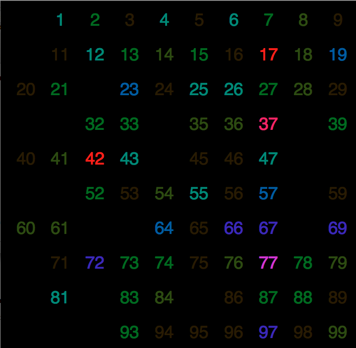

Data and Data Quality
Data
Data is simultaneously a very important and very overlooked part of Data Mining. Possibly because data cannot be easily defined. Data takes many forms, and varies dramatically from domain to domain. Some of the ways data varies are defined by different attributes of the data set, and there are multiple types of data set. Data can also vary by quality. Depending on how and why the data is gathered, its quality will vary based on application. Some types of data are easily summarized using different statistic values like means, medians, and standard deviations, while this doesn't make any sense for other types of data. Many types of data can be explored visually in different ways, and some people enjoy the 'art' of data visualization.
Datasets and Data Types
There are several prominent types of dataset. Temporal data is an example of a very prominent dataset. Whenever data is collected over time, it's a temporal dataset. Since temporal datasets are collected at different points in time, they can suffer from an effect known as temporal autocorrelation. Temporal autocorrelation is a type of bias unique to time series data. If data points are collected very near each other in time, they are likely to be similar. What we mean by near in time depends heavily on the domain. The weather is likely to be extremely similar second to second, while continental drift is likely to be similar days, weeks, or months at a time.
Another prominent type of dataset is spatial data. Spacial data is similar to temporal data in collection and problems associated with the dataset. Spacial data is data collected at different locations. Similar to how temporal data suffers from data taken near each other, spacial data suffers from spacial autocorrelation. For example, if we were to collect elevation data it doesn't make sense to take measurements within inches of other measurements.
Regardless of whether the data falls into one of the above dataset types, or is another type of dataset, there are certain characteristics that a dataset always has. Synchronicity is a term that describes the distribution of the attributes. In binary data, if one is far more common than zero (or vice versa) this data is said to be asynchronous. Dimensionality, a term people familiar with linear algebra might recognize, is how many attributes the dataset possesses. Large dimensionality can make some operations difficult, such as similarity metrics. It's important for the Data Miner to be as familiar with the data as possible. Sometimes correlations are built in, or rows are redundant. A human must always play some role in the process, though this can be a double edged sword.
Data itself falls into a number of different categories. For example, numeric data can be binary or continuous. However, sometimes there are multiple discrete values that can occur. For example, if you had a color attribute it could include values such as red, green, blue, yellow, and many others. This type of data is considered nominal. The only operation that is appropriate on it is equality. Color doesn't have any type of order. However, if we did have a discrete set of values, say days of the week, then there is an order. This type of data is said to be ordinal. It can use equality, as well as less than or greater than operators.
Data Quality
Whether from human error, or from different uses of the same data, sometimes data doesn't tell us exactly what we want to know. Because data plays such a large role in the data mining process, the quality of the data significantly impacts the results. There are many different issues that can reduce the quality of the data, many from human error and some from computer or machine precision.
Among other things, data can suffer from noise. Noise is data that distracts from the reality of the situation. When you talk on the phone in a crowded area, the noise can drown out the conversation. The same thing can happen in data collection. Some algorithms, like DBScan, are good at ignoring noise. Similar to noise, outliers are more singular. After you've moved your phone conversation somewhere quiet, an outlier is a door slamming or a tree falling in the woods.
Any time a tool is used to measure something qualitatively, the issues of measurement error, precision and bias, rear their heads. No tool can measure anything exactly. The precision of a device is how close to exactly it can measure something. For instance, a ruler with a smallest mark of 1/16th of an inch can't measure something in precisely if it's shorter than 1/16th of an inch. Bias comes from a tool or method that always skews the data in the same way. For example, if you have a bathroom scale that isn't zeroed, but instead starts at five pounds, you will always seem five pounds heavier than you actually are.
One final issue that can be attributed mostly to humans is missing data. If someone forgot to enter a piece of information, or didn't take a reading on time, the dataset has gaps or missing data. While these can be problematic, it really just emphasizes the importance of the data scientist's familiarity with the dataset. There are several ways to fill in missing data, you can use the mean or median of other points, an interpolation, or a mode. Knowing which one is most appropriate requires knowledge of the attribute.
Summary Statistics
I've mentioned a few summary statistics, but haven't talked about generating them. Data mining involves very large datasets, so the data miner that isn't paid hourly won't want to go through the data with their TI-89 to find the mean. Luckily, salaried data miners have tools a little more specialized and useful than a TI-89. While there are many toolsets floating around the interwebs, the examples below are from Weka and Knime. Both Weka and Knime are free, cross platform toolkits. It's worth mentioning that SAS is a popular toolkit in industry, however it isn't free.

Image of a Knime workflow, and the summary statistics it generated on the Iris dataset.
Image of Weka generating summary statistics on the Iris dataset.
Data Visualization
One interesting process of Data Mining aims solely at making data human readable. This process is known as Data Visualization. While this can sometimes be the way to present your results at the conclusion of other mining methods, it can also be used to inspect the data. The human brain is much better at processing information visually. Our brains can detect patterns and groupings and noise more easily than a computer algorithm.
The classic data visualizations like pie charts and bar graphs, while useful, are limited to only a few dimensions of data. The goal of Data Visualization is to present as much information as possible, while still having be comprehensible. Many people have turned Data Visualization into an art form, trying to create attractive images or videos out of the patterns in the data. For the data miner, however, readability is still essential. The ultimate objective is to create something appealing and informative. Below is an example of a simple data visualization of people tweeting their random numbers in an experiment.
Of course 42 is a popular choice in this Data Visualization of 225 people's "random" numbers.